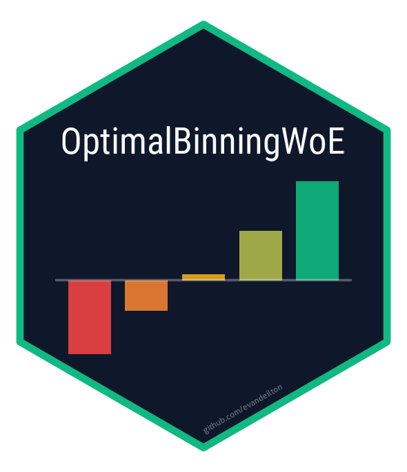

Algorithm Reference: the 37 Binning Engines
José Evandeilton Lopes
2026-10-15
Source:vignettes/algorithms.Rmd
algorithms.RmdScope, and how this was written
The package ships 28 algorithms covering 37 algorithm/feature-type combinations: 21 accept numerical features, 16 accept categorical ones, 9 accept both, and 1 accepts a multinomial target.
This reference was produced by reading the C++ implementation of every engine and comparing it against the literature its documentation invokes. Two rules governed the writing:
- A claim is made only if it can be traced — either to a specific line of the shipped source, or to a publication whose existence was verified. Where neither was possible, the text says so rather than filling the gap.
- The name is not evidence. Several engines in this package are named for methods they do not implement. Each entry below states what the code does, and separately whether the name describes it.
That second rule is not a criticism of the package so much as a
description of it: much of the documentation already says the same
thing. R/obn_mblp.R and R/obn_mrblp.R disclaim
their own names in detail, R/obn_dp.R in a sentence, and
R/obn_oslp.R goes as far as recommending against its own
algorithm. This vignette collects those disclosures in one place and
adds the ones that had not been made.
Source citations are file:line ranges in the 1.14.x
sources. Lines drift as the code changes, so each citation also names
the function or comment it points at.
Two ways to run an algorithm
Through obwoe(), which detects feature
types, dispatches, and returns a model object the rest of the package
understands:
data_path <- system.file("extdata", "germancredit.csv.gz",
package = "OptimalBinningWoE")
gc_data <- utils::read.csv(gzfile(data_path), stringsAsFactors = FALSE)
gc_data$target <- as.integer(1L - gc_data$credit_risk)
gc_data$credit_risk <- NULL
fit <- obwoe(gc_data, target = "target", feature = c("duration", "purpose"),
algorithm = "jedi", min_bins = 2, max_bins = 5)
fit$summary[, c("feature", "type", "algorithm", "n_bins", "total_iv")]
#> feature type algorithm n_bins total_iv
#> 1 duration numerical jedi 5 0.2474
#> 2 purpose categorical jedi 5 0.1533Or by calling the engine directly, which returns a plain list for one feature:
direct <- ob_numerical_jedi(target = gc_data$target,
feature = gc_data$duration,
min_bins = 2, max_bins = 5)
data.frame(bin = direct$bin, count = direct$count,
woe = round(direct$woe, 4), iv = round(direct$iv, 4))
#> bin count woe iv
#> 1 (-Inf;7.000000] 87 -1.3122 0.1068
#> 2 (7.000000;10.000000] 84 -0.4520 0.0155
#> 3 (10.000000;33.000000] 659 -0.0489 0.0016
#> 4 (33.000000;39.000000] 88 0.5729 0.0316
#> 5 (39.000000;+Inf] 82 0.9939 0.0918
obwoe() does not forward algorithm-specific
parameters
obwoe() builds a fixed argument list —
min_bins, max_bins, bin_cutoff,
max_n_prebins, convergence_threshold,
max_iterations, and bin_separator for
categorical features — and passes nothing else. An engine’s own
parameters are unreachable through it, and routing them via
control.obwoe() fails silently:
via_obwoe <- obwoe(gc_data, target = "target", feature = "duration",
algorithm = "dmiv",
control = control.obwoe(divergence_method = "kl"))
direct_dmiv <- ob_numerical_dmiv(target = gc_data$target,
feature = gc_data$duration,
divergence_method = "kl")
c(`through obwoe()` = via_obwoe$results$duration$divergence_method,
`direct wrapper` = direct_dmiv$divergence_method)
#> through obwoe() direct wrapper
#> "l2" "kl"If you need an algorithm-specific parameter, call the engine directly.
Coverage
coverage <- alg
coverage$feature_types <- ifelse(coverage$numerical & coverage$categorical, "both",
ifelse(coverage$numerical, "numerical", "categorical"))
coverage$target <- ifelse(coverage$multinomial, "binary + multinomial", "binary")
coverage[order(coverage$feature_types, coverage$algorithm),
c("algorithm", "feature_types", "target")]
#> algorithm feature_types target
#> 1 cm both binary
#> 2 dmiv both binary
#> 3 dp both binary
#> 4 fetb both binary
#> 5 jedi both binary
#> 6 jedi_mwoe both binary + multinomial
#> 7 mob both binary
#> 8 sketch both binary
#> 9 udt both binary
#> 10 gmb categorical binary
#> 11 ivb categorical binary
#> 12 mba categorical binary
#> 13 milp categorical binary
#> 14 sab categorical binary
#> 15 sblp categorical binary
#> 16 swb categorical binary
#> 17 bb numerical binary
#> 18 ewb numerical binary
#> 19 fast_mdlp numerical binary
#> 20 ir numerical binary
#> 21 kmb numerical binary
#> 22 ldb numerical binary
#> 23 lpdb numerical binary
#> 24 mblp numerical binary
#> 25 mdlp numerical binary
#> 26 mrblp numerical binary
#> 27 oslp numerical binary
#> 28 ubsd numerical binaryThe quantity being optimized
Most engines here optimize Information Value, and all of them report it, so it is worth stating what that is. For bins with event counts (target = 1) and non-event counts (target = 0), and totals :
Events are the numerator in every engine, so WoE is positive where
the event share exceeds the non-event share. (Texts that put the “good”
class in the numerator flip the sign; target = 1 is the
event, which in credit scoring is usually the bad outcome.)
IV is the symmetrized Kullback–Leibler divergence between the event
and non-event distributions — the Jeffreys divergence. Zeng (2013, §3.2)
states this identity explicitly, which is what makes the
divergence-based engine dmiv a generalization rather than a
different idea.
The weight of evidence itself long predates credit scoring. Good (1985, p. 249) records that the log-likelihood-ratio form was first published by Wrinch and Jeffreys (1921); that Turing named the quantity informally in classified work at Bletchley Park in 1941; and that Good (1950) published and popularized the term. Kullback–Leibler divergence is its expectation.
Smoothing is not uniform across the package. Most
engines add a pseudo-count before taking the logarithm, but the
constant, its scaling, and whether IV uses the same smoothed proportions
as WoE all vary. Five engine variants — ldb,
lpdb, kmb, numerical dp and
categorical cm — compute WoE from smoothed
proportions but weight it by the raw share difference, so their
IV is
.
In ldb this is visible at
src/OBN_LDB_v5.cpp:125-158: calculateWOE()
divides by total_pos + num_bins * ALPHA, while
calculateIV() takes the raw difference
pos / total_pos - neg / total_neg and multiplies it by that
WoE. Categorical cm does the same
(calculate_woe_iv() and calculate_woe(),
src/OBC_CM_v5.cpp:778-799, 832-839). Numerical
jedi does not smooth at all: WoE and IV use raw shares,
with
standing in for an empty cell (calculate_woe_iv(),
src/OBN_JEDI_v5.cpp:362-381). The effect is small at
and moderate
,
but it is real, and it means reported IV is not exactly the IV of the
model whose WoE is reported, and that IVs of different engines are not
comparable to the third decimal.
Choosing an algorithm
algorithm = "auto" resolves to jedi for a
binary target and jedi_mwoe for a multinomial one. It is a
fixed alias, not a search.
On German Credit with five-fold held-out IV, jedi is
within one standard error of the best available engine on 18 of 20
variables. For most variables the choice of engine is worth close to
nothing; where it matters, it tends to matter on continuous variables
with a long tail.
| If you need | Reach for | Because |
|---|---|---|
| A sound general default | jedi |
Fast, monotonicity-aware, rarely beaten by enough to matter |
| A multinomial target | jedi_mwoe |
The only engine that accepts one |
| A statistical stopping rule |
cm (categorical) |
The significance level decides the bin count. In numerical
cm it does not: max_bins does (see below) |
| IV-optimal bins given the ordering |
ivb, dp (categorical),
sblp
|
Dynamic programming over the ordered levels. Categorical
dp scores a bin with no events or no non-events as WoE = IV
= 0; sblp optimizes its own smoothing, not the IV it
reports, and may merge bins afterwards |
| The bin count decided by theory | fast_mdlp |
The only Fayyad–Irani criterion here; max_bins,
min_bins and the default
force_monotonicity = TRUE can still override it |
| Monotone event rates by construction | ir |
Isotonic regression pools the violating bins, so event rates are
monotone; the smoothed WoE can still break that order when adjacent bins
tie in event rate (two bins with no events, for example) or when a bin
is tiny; bin_cutoff only guards against the second
case |
| Very high cardinality |
sketch (categorical) |
Heavy hitters are found with fixed-size Count-Min sketches; exact counts are still kept for every level |
| An equal-width start | ewb |
Equal-width initialization, then supervised merging, honestly labeled hybrid |
Reference, organized by mechanism
Grouping engines by what they do rather than by what they are called produces a different and more useful taxonomy than the names suggest.
Exact dynamic programming
Three engines genuinely solve an optimal-partition problem: having
sorted the levels by event rate, they find the contiguous partition
maximizing total IV by Bellman recursion, not by greedy merging. All
three are
for
pre-bins (the levels left after rare-level pooling, at most
max_n_prebins) and
,
and all three work on categorical features (dp is a dynamic
program only in its categorical form).
ivb (ob_categorical_ivb())
— sorts levels by event rate, then runs an interval DP over cumulative
counts with a segment-IV cache, so each DP cell is
(CumulativeStatsCache and IVCache,
src/OBC_IVB_v5.cpp:68-192; recurrence in
perform_dynamic_programming(), :463-493). No
own parameters.
dp, categorical
(ob_categorical_dp()) — the same DP over the levels sorted
by event rate (compute_and_sort_event_rates(),
src/OBC_DP_v5.cpp:477-513; recurrence in
perform_dynamic_programming(), :539-585).
There is no trend test in the recurrence: the pooled
event rate of a run of consecutive sorted levels lies between those of
its first and last members, so every contiguous partition has monotone
event rates by construction (the code comment at :545-557
records that an earlier test only fired on an artifact). A bin without
events or without non-events is still reported with WoE = IV = 0
(:75-82, :662), which can break the order of
the reported WoE. When there are more than max_bins levels,
monotonic_trend therefore only orders the list:
"descending" reverses it, and "auto" runs a
Welford-stable online correlation (Welford, 1962) on rates that are
already sorted ascending, so it always resolves to ascending. With at
most max_bins levels the DP is skipped
(compute_bins_no_optimization(), :346-368) and
the levels come out in ascending event-rate order, so
"descending" is ignored ("none" leaves them in
hash order). Own parameter: monotonic_trend
("auto", "ascending",
"descending", "none").
sblp
(ob_categorical_sblp()) — event-rate ordering, a
rate-similarity pre-merge for rare levels
(handle_rare_categories(),
src/OBC_SBLP_v5.cpp:289-376), then interval DP over prefix
sums (perform_binning(), :441-502). The IV of
a segment is
,
so it is
like ivb and dp; the comment above
perform_binning() records that an earlier version re-summed
every candidate segment and was
.
Own parameter: alpha (Laplace constant). Two
cautions. The DP adds alpha once per level in a
segment (iv_from_counts(), :506-521), while
the reported WoE and IV add it once per bin
(prepare_output(), :592-605), so the partition
is optimal for a slightly different objective than the IV it reports.
And, as a name note, no logistic regression is fitted anywhere; the R
documentation’s analogy to Jenks natural breaks is structural only —
both are exact dynamic programs over a sorted sequence, but
sblp maximizes IV, not within-class variance.
There is a fourth, hidden DP: sketch,
numerical contains a correct Bellman DP over “best sum of
splitting the first i sorted points into j bins”
(DynamicProgramming::optimize(),
src/OBN_Sketch_v5.cpp:237-299) — but it runs only when
,
a threshold hardcoded as dp_size_limit(50)
(:595), tested in select_optimal_cutpoints()
(:447) and not exposed. For any real dataset,
sketch takes its greedy branch.
Recursive entropy partitioning
fast_mdlp
(ob_numerical_fast_mdlp()) — the only engine implementing
the Fayyad–Irani (1993) criterion as published. It splits top-down,
accepting a cut when the information gain exceeds
where
is the number of observations in the interval
and
count the classes present in the interval and in its two parts. For a
binary target
,
so
;
the child terms stay in (best_mdlp_cut(),
src/OBN_FastMDLPM_v5.cpp:217-272,
at :261-262). Own parameter:
force_monotonicity.
Four caveats. (1) max_n_prebins and
bin_cutoff are accepted and then discarded:
(void) bin_cutoff; (void) max_n_prebins; at
src/OBN_FastMDLPM_v5.cpp:541-542. (2) max_bins
truncates by best-first expansion, not by recursion
order: mdlp_cuts() (:285-304) keeps a priority
queue of the accepted cut of every open interval, ordered by entropy
reduction, pops the largest, splits that interval, and stops after
max_bins - 1 cuts. The result is the best-first prefix of
the Fayyad–Irani tree. That is not a global
top-
selection, because a child interval can offer a larger gain than its
parent. (3) When the criterion accepts fewer than
min_bins - 1 cuts, force_min_bins()
(:361) discards them and places min_bins - 1
cuts spread approximately evenly over the distinct values. (4) The
default force_monotonicity = TRUE then merges the adjacent
pair with the closest WoE, until WoE is strictly monotone or
min_bins bins remain (enforce_monotonicity(),
:472), which can drop cuts the criterion accepted; with
force_monotonicity = FALSE this step is skipped.
udt, numerical
(ob_numerical_udt()) — scores every candidate midpoint by
information gain in a single prefix-sum sweep
(get_entropy_based_cutpoints(),
src/OBN_UDT_v5.cpp:425-522), keeps the top
max_n_prebins by gain, then merges bottom-up. Own
parameters: laplace_smoothing,
monotonicity_direction. A split phase
(split_optimal_bin(), :794-876) runs only when
fewer than min_bins bins remain, and it rescans the full
feature vector once per bin it examines. Name note: the
package’s own roxygen states it plainly — the method is supervised and
builds no tree.
Bottom-up MDL cost
mdlp (ob_numerical_mdlp())
— merges, one at a time, the adjacent pair whose merge lowers the
description-length cost
where
is the number of observations in bin
.
Both terms carry a plus sign: the model cost, and the bits needed to
encode the classes given the bins (the comment at
src/OBN_MDLP_v5.cpp:107-112; the merge delta in
apply_mdl_merging(), :755-814). A merge never
lowers the data term (entropy is concave) and always lowers the model
term, so the loop stops at the first local optimum, where no merge
lowers the cost. It also stops once a merge brings the count to
max_bins or below (:798-801), when
min_bins is reached, or when max_iterations
runs out (with a warning); a stop at the local optimum or on the
iteration cap is what can leave more than max_bins bins.
Three more passes then run, none of them MDL-optimal:
enforce_max_bins() (:832-867) keeps merging
the cheapest pair — every remaining delta is positive by now — until
max_bins is met; bin_cutoff merges rare bins
(merge_rare_bins(), :299); and, unless the WoE
is already monotone, enforce_monotonicity()
(:215-291) merges WoE-violating pairs, choosing the side by
an IV-loss comparison rather than by MDL cost. The bins that come back
can therefore still contain adjacent pairs whose merge would lower the
MDL cost. Own parameter: laplace_smoothing.
Name note. This is an MDL-flavored cost, but it is
not the Fayyad–Irani criterion: the term
appears nowhere in the file, and the algorithm is agglomerative
bottom-up where the cited paper is recursive top-down.
R/obn_mdlp.R:137 nonetheless claims a “Theoretical
Guarantee (Fayyad & Irani, 1993)”. The guarantee does not transfer.
Confusingly, the engine that does implement the paper is the
one named fast_mdlp, whose name suggests it is merely a
faster variant of this one.
Statistical merging
cm (ob_numerical_cm(),
ob_categorical_cm()) — ChiMerge (Kerber, 1992): repeatedly
merge the adjacent pair with the smallest
,
stop when the smallest exceeds a critical value. Own parameters:
chi_merge_threshold, use_chi2_algorithm, and
init_method on the numerical side. Setting
use_chi2_algorithm = TRUE defines the Chi2 extension of Liu
and Setiono (1995): the same merge swept over a decreasing schedule of
significance levels (0.5 down to 0.001), with an inconsistency-rate
check. Because max_bins is enforced first, the schedule
ends after its first level: numerical cm returns the
ChiMerge bins (without the rare-bin pass), and categorical
cm returns one ChiMerge pass at
chi_merge_threshold = 0.5, whatever threshold was passed.
Unlike the ChiMerge path, the Chi2 path skips the
bin_cutoff rare-level pass and the
max_n_prebins limit (perform_chi2_binning(),
src/OBC_CM_v5.cpp:450-480; compare
perform_chimerge_binning(), :430-445), so the
two can differ.
Three implementation notes. The statistic includes a
Yates continuity correction with the deviation clamped
at zero,
,
as in chisq.test(correct = TRUE)
(calculate_chi_square(),
src/OBN_CM_v5.cpp:138-172). Kerber (1992, p. 124) prints
the plain Pearson sum
without a continuity correction, so the Yates form is this package’s
choice, and the unclamped
is not what the code computes. The critical value is
qchisq(1 - alpha, 1)
(chi_square_critical_value(), :965-967; 3.841
for alpha = 0.05), not a lookup table.
And, in the numerical engine,
chi_merge_threshold does not change the
result. The initial bins are merged, smallest
first, down to max_bins before the significance test could
be reached (enforce_bin_limits(), :597-615, is
called right after pre-binning at :1099-1102 and again at
the end), so chi_merge() (:622-687) has no
merge left to decide; the Chi2 schedule (chi2_algorithm(),
:694-767) behaves the same way. max_bins sets
the bin count, and bin_cutoff and monotonicity can only
merge further. The categorical engine differs: it merges down to
max_bins and then keeps merging while the smallest
is below the critical value (merge_bins_chimerge(),
src/OBC_CM_v5.cpp:582-630), so there the significance level
does decide the bin count.
fetb (ob_numerical_fetb(),
ob_categorical_fetb()) — merges the adjacent pair whose 2×2
table is least distinguishable: the pair with the highest
two-sided Fisher p-value, computed in C++ with the same
tolerance for “as extreme” tables as fisher.test()
(fisher_two_sided_log_p(),
src/OBN_FETB_v5.cpp:91-154; categorical
fisherLogPValue(), src/OBC_FETB_v5.cpp:172).
No own parameters.
What it computes. The p-value ranks the merges; it does not
stop them. There is no α: merging continues until max_bins
is met (fisher_merge_loop(),
src/OBN_FETB_v5.cpp:325-342). Releases before 1.14.0 ranked
merges by the hypergeometric point probability of the observed
table, which is not a p-value. On the categorical side,
max_n_prebins is accepted and never read
(src/OBC_FETB_v5.cpp:423).
Isotonic regression
ir (ob_numerical_ir()) —
an engine whose name survives inspection. Weighted Pool Adjacent
Violators on bin event rates, correctly implemented
(applyIsotonicRegression(),
src/OBN_IR_v5.cpp:663-721), and — importantly — the bins
that PAVA pools are then genuinely merged rather than having fitted
values written over them, so the reported counts and the isotonic fit
stay consistent. Own parameter: auto_monotonicity.
min_bins is a target, not a guarantee: pooling can
legitimately end below it, and the roxygen says so.
Three notes. The pass is a single stack scan in which every
bin is pushed once and each pooling removes one block, so there are at
most
poolings and PAVA is
in the number of pre-bins, as the code comment at :641-662
says. The pre-bins themselves are capped:
createRegularBins() uses
min(max_n_prebins, distinct values, max_bins) bins at
evenly spaced ranks of the distinct values (quantiles when all values
are distinct; :313-327), raised to min_bins,
so with the default max_bins = 5 the isotonic fit sees at
most five pre-bins and max_n_prebins changes nothing above
max_bins. And R/obn_ir.R:63 credits PAVA to
Best and Chakravarti (1990) — a real paper about active-set methods for
isotonic regression, but not the algorithm’s origin, which is Ayer,
Brunk, Ewing, Reid and Silverman (1955).
Density-based
Both engines locate cut points from a Gaussian kernel density
estimate, computed by linear binning onto a grid followed by a direct
convolution (not an FFT), in the shared helper
gaussian_kde_grid()
(src/common/optimal_binning_common.h:125-195;
ldb reads the grid back at the observations through
gaussian_kde_sorted(), :222-255). It is a
binned estimator in the family of Silverman (1982) and Wand (1994), with
cost for
grid points. The grid has 512 points and is not user-adjustable, so
structure narrower than 1/511 of the feature’s range is not
resolved.
ldb (ob_numerical_ldb()) —
cuts at local minima of the density. Bandwidth
0.9 * min(sd, IQR/1.34) * n^(-1/5), floored at
range / 1000 (src/OBN_LDB_v5.cpp:379-410).
That is Silverman’s rule of thumb (1986, p. 48, eq. 3.31) with at least
two differences: sd is the population standard deviation
(divisor
,
computed as
,
which loses precision when the feature has a large offset), and the
floor applies whenever the rule gives a smaller value. It therefore
differs from bw.nrd0() in both (and the IQR is taken from
order statistics without interpolation). Own parameter:
enforce_monotonic.
lpdb (ob_numerical_lpdb())
— cuts at extrema and inflection points, found by finite
differences of the gridded density. Own parameters:
polynomial_degree, enforce_monotonic.
Name note. No polynomial is fitted.
polynomial_degree is validated (1 to 10) and never read —
setting it changes nothing; the R documentation now says so. Its
bandwidth also drops the robustness term and the floor, using
0.9 * sd * n^(-1/5) with the population standard deviation
(src/OBN_LPDB_v5.cpp:820-836), which makes it more
outlier-sensitive than ldb.
Distribution-based initialization
ewb (ob_numerical_ewb()) —
equal-width intervals, then supervised merging. Honestly labeled as
hybrid. Own parameter: is_monotonic. Its WoE and IV use the
same smoothed proportions, unlike
ldb/lpdb/kmb/dp.
kmb (ob_numerical_kmb()) —
centroids placed at min + (i+0.5)·range/n_bins and
boundaries at their midpoints (createRegularBins(),
src/OBN_KMB_v5.cpp:273-323). Name note: there is
no assignment/update iteration, so this is not Lloyd’s algorithm (1982)
— evenly spaced centroids with midpoint boundaries is equal-width
binning under another name. The roxygen is careful and says “k-means
inspired”. The initial bin count is also capped at
max_bins, so raising max_n_prebins above
max_bins does nothing.
ubsd (ob_numerical_ubsd())
— edges at
unioned with equal-width points
(src/OBN_UBSD_v5.cpp:357-374), then supervised refinement.
Own parameter: laplace_smoothing. Note: it has
no argument to disable monotonicity enforcement; it
always calls enforce_monotonicity() (:122),
and ten other numerical engines also always enforce monotonicity
(cm, fetb, ir, jedi,
jedi_mwoe, mblp, mdlp,
mob, mrblp, oslp). The roxygen
already corrects the “unsupervised” in its name: only initialization is
unsupervised.
Divergence-driven
dmiv (ob_numerical_dmiv(),
ob_categorical_dmiv()) — merges by one of nine divergences:
Hellinger, KL, triangular, J-divergence, symmetric
,
Jensen–Shannon (Lin, 1991), L1, L2, L∞. Own parameters:
divergence_method, bin_method, and
is_monotonic on the numerical side.
bin_method defaults to "woe1",
which is not standard WoE. Zeng’s WOE1 is
— a per-bin log-odds with no normalization by the totals — so it differs
from standard WoE by the constant
.
IV is unaffected, because the offset cancels in the sum, and the code
computes IV separately from the smoothed class distributions for exactly
that reason (src/OBN_DMIV_v5.cpp:790-822). But the WoE
values are not comparable with the other 27 engines, and a scorecard
fitted on them carries a different intercept. Pass
bin_method = "woe" to the wrapper for the standard
definition.
Merge rule (numerical). The merge phase does not compare
pairs: it finds the single bin with the smallest absolute divergence
contribution and absorbs it into the previous bin (into the next one
when it is the first), until max_bins is met
(fit(), src/OBN_DMIV_v5.cpp:720-761; the
comment there calls this “Branch and Bound”, but nothing is branched or
bounded).
Attribution note. The package presents the
smoothed form
as Zeng’s (R/obc_dmiv.R:44). Zeng’s published WOE1 is
unsmoothed; the pseudo-count is this package’s own numerical-stability
addition. In the numerical engine two divergence methods also behave
globally rather than per bin — l2 rescales each bin’s share
of the global norm, and l∞ assigns the maximum to whichever
bins attain it and zero to all others
(src/OBN_DMIV_v5.cpp:426-449); the categorical engine uses
them as ordinary pairwise distances between two bins.
Streaming
sketch
(ob_numerical_sketch(),
ob_categorical_sketch()) — built on streaming summaries,
though both wrappers receive the full in-memory vectors. The categorical
variant uses fixed-size Count-Min sketches (Cormode and Muthukrishnan,
2005) to decide which categories are heavy hitters. It does
not make memory independent of the number of levels:
the class counts of every distinct level are kept exactly
(cat_pos, cat_neg and cat_index,
src/OBC_Sketch_v5.cpp:231-233) and the bin statistics are
read from them (exact_counts(), :289-299), so
only the heavy-hitter decision is approximate. The numerical variant
uses a multi-level compactor for approximate quantiles; the quantiles
only propose candidate cutpoints, and every bin statistic is then
computed exactly from the feature and target vectors, which the engine
keeps (src/OBN_Sketch_v5.cpp:307-308). Own parameters:
sketch_k and monotonic (numerical);
sketch_width, sketch_depth (categorical).
Qualifications on the numerical side. The compactor uses the
same capacity at every level and a
deterministic parity rule to choose which item of a
compacted pair survives: the lower one on even levels, the upper one on
odd levels (KLLSketch,
src/OBN_Sketch_v5.cpp:43-161, rule at :99).
Karnin, Lang and Liberty (2016) obtain their optimal bound from
geometrically decreasing capacities and a randomized coin flip; neither
is present here. The code comment at :54-59 derives a
worst-case rank error of about
with
levels, that is
,
and R/obn_sketch.R states the same bound next to the
of the original randomized algorithm, which is not established for this
variant. And max_n_prebins is never read
((void)max_n_prebins, :700) — the candidate
quantile grid is hardcoded.
Greedy merging under an IV or WoE criterion
The largest group. All follow the same shape — pre-bin, merge rare
bins, merge until max_bins, repair monotonicity — and
differ in three choices: how the levels are ordered, how the merge
direction is decided, and which IV expression selects the merge.
| Engine | Types | Ordering / direction rule | Merge criterion |
|---|---|---|---|
jedi |
both | Numerical: majority vote over WoE increments. Categorical: bins ordered by WoE | Numerical: smallest summed current IV. Categorical: least IV loss |
jedi_mwoe |
both | Numerical: per-class, all classes checked. Categorical: alternating divergence and IV-loss merges | Numerical: smallest IV summed over classes. Categorical: least IV loss summed over classes |
mob |
both | Numerical: majority vote over adjacent WoE steps. Categorical: direction with fewer violations | Numerical: minimum IV loss after merge. Categorical: event-rate similarity, then smallest adjacent WoE difference |
mrblp |
numerical | Majority vote | Smallest |
mblp |
numerical | Pearson correlation | Minimum IV loss after merge |
oslp |
numerical | Majority vote | Smallest |
bb |
numerical | Both directions simulated, higher IV wins | Globally minimum-IV bin |
gmb |
categorical | Event rate, adjacent only | Highest post-merge total IV |
mba |
categorical | Count, then all-pairs rate similarity | Minimum IV loss |
milp |
categorical | All-pairs rate similarity for pre-bins and rare levels, then WoE order | Minimum loss of |
swb |
categorical | WoE order, JS divergence | Minimum JS divergence |
udt |
categorical | WoE order, JS divergence | Minimum JS divergence |
Own parameters: laplace_smoothing for numerical
mob, mrblp, oslp;
force_monotonic_direction for mblp;
is_monotonic for bb; none for the rest.
jedi and jedi_mwoe are the package
author’s own construction, combining adjacent published
techniques rather than implementing a named method — there is no paper
to cite and none is claimed. The numerical heuristic is: pre-binning at
evenly spaced ranks of the distinct values; merge bins below
bin_cutoff into the smaller neighbor; infer trend direction
by majority vote over pairwise WoE increments; merge violating adjacent
pairs until monotone; then merge until max_bins, each time
taking the adjacent pair with the smallest summed current IV; iterate
until total IV stops changing by more than
convergence_threshold (fit(),
src/OBN_JEDI_v5.cpp:136-166; the merge helpers are at
:333-449). Numerical jedi_mwoe is the same
procedure with one-vs-rest WoE per class, requiring monotonicity in
every class simultaneously (the categorical version does not, see
below). Name note: despite “Joint Entropy-Driven” in the title,
the numerical implementation computes no entropy — the file contains no
entropy, log2 or information-gain term anywhere. The
optimization is entirely WoE/IV-driven. The merge criterion is the
smallest summed current IV, which is only a proxy for the
smallest IV loss; the roxygen now says so.
bb is named “Branch and Bound” but
neither branches nor bounds: it repeatedly merges the single lowest-IV
bin into a neighbor and never reconsiders (the loop headed “Branch and
Bound optimization”, src/OBN_BB_v5.cpp:511-546).
dp, numerical is named “Dynamic
Programming” and builds no DP table — its own source comment says so and
cites Navas-Palencia (2020) as what a real formulation would look like.
milp solves no mixed-integer program, and
its header says so. mblp and
oslp contain no linear program.
mrblp does no likelihood-ratio
pre-binning: the word “likelihood” appears only in comments.
swb slides no window — for unordered
levels there is no axis to slide along; it is greedy divergence merging
with an adjacency preference.
R/obn_oslp.R:142 recommends against oslp
outright: “Use OSLP: Never. Use MBLP or MOB instead”.
Metaheuristic
sab (ob_categorical_sab())
— simulated annealing (Kirkpatrick, Gelatt and Vecchi, 1983) over
category-to-bin assignments. A move swaps two levels, reassigns one
level to a random bin, or moves the level with the largest event-rate
gap to its best bin (generate_neighbor(),
src/OBC_SAB_v5.cpp:285-368), so levels are not tied to a
single ordering — as in several other categorical engines
(dmiv, mba, swb), which also
merge non-adjacent bins. Violations enter the objective as penalties
(calculate_iv(), :172-237): −1000 for each bin
below bin_cutoff, −1000 for each bin short of
min_bins, and −500 for a non-monotone solution; a final
step still re-sorts the bins by event rate if the best solution is not
monotone (ensure_monotonicity(), :567-632).
Own parameters: initial_temperature,
cooling_rate, adaptive_cooling. Its random
draws come from R’s RNG stream, so set.seed() makes it
reproducible. max_n_prebins is validated and never used, so
it anneals over the full level set.
Measured behavior
All 37 combinations on the bundled German Credit data, identical constraints:
run_all <- function(feature, type) {
ids <- alg$algorithm[alg[[type]]]
out <- lapply(ids, function(a) {
r <- try(suppressWarnings(suppressMessages(
obwoe(gc_data, target = "target", feature = feature,
algorithm = a, min_bins = 2, max_bins = 5))), silent = TRUE)
if (inherits(r, "try-error") || r$summary$error) {
data.frame(algorithm = a, bins = NA_integer_, total_iv = NA_real_)
} else {
data.frame(algorithm = a, bins = r$summary$n_bins,
total_iv = round(r$summary$total_iv, 4))
}
})
do.call(rbind, out)
}
num_res <- run_all("duration", "numerical")
knitr::kable(num_res[order(-num_res$total_iv), ], row.names = FALSE,
caption = "Numerical engines on `duration`")| algorithm | bins | total_iv |
|---|---|---|
| jedi_mwoe | 5 | 0.4947 |
| udt | 5 | 0.2781 |
| ewb | 5 | 0.2747 |
| ubsd | 5 | 0.2680 |
| lpdb | 5 | 0.2626 |
| dp | 5 | 0.2568 |
| mblp | 5 | 0.2537 |
| fetb | 5 | 0.2531 |
| mob | 5 | 0.2531 |
| mrblp | 5 | 0.2531 |
| cm | 4 | 0.2487 |
| jedi | 5 | 0.2474 |
| oslp | 5 | 0.2458 |
| dmiv | 5 | 0.2395 |
| ir | 5 | 0.2338 |
| kmb | 4 | 0.2290 |
| bb | 5 | 0.2281 |
| sketch | 4 | 0.2134 |
| mdlp | 3 | 0.1910 |
| ldb | 4 | 0.1807 |
| fast_mdlp | 2 | 0.1556 |
cat_res <- run_all("purpose", "categorical")
knitr::kable(cat_res[order(-cat_res$total_iv), ], row.names = FALSE,
caption = "Categorical engines on `purpose`")| algorithm | bins | total_iv |
|---|---|---|
| mob | 5 | 0.1656 |
| gmb | 5 | 0.1656 |
| mba | 5 | 0.1656 |
| milp | 5 | 0.1656 |
| sab | 5 | 0.1656 |
| sblp | 5 | 0.1629 |
| dmiv | 5 | 0.1549 |
| dp | 5 | 0.1533 |
| fetb | 5 | 0.1533 |
| jedi | 5 | 0.1533 |
| ivb | 5 | 0.1525 |
| sketch | 5 | 0.1464 |
| udt | 5 | 0.1464 |
| swb | 5 | 0.1464 |
| cm | 2 | 0.1414 |
| jedi_mwoe | 3 | 0.1349 |
Read those as a sanity check, not a ranking. IV measured on the same data that produced the bins rewards more bins automatically, and one variable cannot separate engines differing by thousandths. A defensible comparison needs held-out data.
As of version 1.13.3 every engine bins a 100,000-row numerical
feature in under a quarter of a second. Before that release
ldb, lpdb and numerical udt
scaled quadratically and took 10.7s, 10.7s and 7.4s at only 50,000
rows.
Known limitations
Collected so they are findable.
Parameters accepted and never used.
polynomial_degree in lpdb;
max_n_prebins in fast_mdlp, numerical
sketch, and categorical fetb, sab
and udt; max_iterations in numerical
sketch and categorical dp;
bin_cutoff in fast_mdlp and categorical
dmiv, whose rare-level pre-binning (only when there are
more levels than max_n_prebins) uses a hardcoded threshold
of 5 observations instead (min_prebin_count,
src/OBC_DMIV_v5.cpp:87, 245). Some of these are validated
and then ignored. In numerical cm,
chi_merge_threshold is read but cannot change the result
(see cm above).
convergence_threshold rarely acts.
Among the numerical engines only jedi,
jedi_mwoe, ubsd and udt stop an
outer loop on a change in IV; fast_mdlp compares it with a
change in WoE in its monotonicity pass, and cm compares it
in code that is never reached (see cm). The other fifteen
accept it and never read it: ldb, lpdb,
ewb, kmb, dp, bb,
ir, mdlp, mob, mblp,
mrblp, oslp, dmiv,
fetb and sketch. Of these, ldb,
lpdb, ewb, kmb, dp,
fetb and mdlp do not even validate it, so a
negative value (or NA, Inf) is accepted.
Levels beyond max_n_prebins in ivb
and gmb. When more levels survive the rare-level
merge than max_n_prebins allows, both fold
the excess into the smallest of the retained levels rather than dropping
it (ensure_max_prebins(),
src/OBC_IVB_v5.cpp:391-415; the “Limit number of pre-bins”
block, src/OBC_GMB_v5.cpp:310-335), so every observation
stays in the binning. Releases before 1.13.3 dropped them. Which levels
keep their own identity is unchanged: the max_n_prebins
most frequent. With bin_cutoff = 0.05 at most 20 levels can
survive the rare-level merge, so with the default
max_n_prebins = 20 the cap only binds at a lower cutoff;
the folded pool can then mix very different event rates, and a larger
max_n_prebins avoids it.
min_bins against
bin_cutoff. In ldb, the rare-bin
merge never goes below min_bins (merge_bins(),
src/OBN_LDB_v5.cpp:843-940), so bins below
bin_cutoff survive once only min_bins bins are
left, as when the pre-binning already yields min_bins bins:
with set.seed(20260930) and rnorm(1e5) the
only density minima found lie in the sparse tails, so the default
min_bins = 3 gives bins of 5, 99,988 and 7 observations.
The numerical cm rare-bin pass goes the other way: it does
not re-check min_bins between merges and can end below it
(merge_rare_bins(),
src/OBN_CM_v5.cpp:811-868).
An empty cell has an unclamped WoE in numerical
jedi. The class share of a bin without events is
floored at
and the log ratio is not clamped (calculate_woe_iv(),
src/OBN_JEDI_v5.cpp:362-381), so such a bin gets WoE
,
about
to
for class shares of 5% to 30%, and an IV contribution of order one or
more that is an artifact of the floor, not predictive power. Most other
engines smooth the counts or clamp at
.
Multiclass monotonicity is not simultaneous. In
categorical jedi_mwoe,
ensure_monotonic_order() re-sorts by each class in turn
without re-checking earlier classes
(src/OBC_JEDIMWoE_v5.cpp:665-675), so a later class’s sort
can reintroduce a violation in an earlier one.
Citation errors in the shipped documentation. Some help pages and source comments cite a work with details that do not match the published record:
-
R/step_obwoe.Rand the help pages of the categoricalgmb,ivb,jediandjedi_mwoecite Navas-Palencia (2020) as Expert Systems with Applications 158, 113508 (doi 10.1016/j.eswa.2020.113508). That DOI belongs to an unrelated paper; the work is an arXiv preprint (arXiv:2001.08025) with no journal version.src/OBC_DP_v5.cpp:123cites it under a title and year (OptBinning: Mathematical Optimization for Optimal Binning, 2022) that match no record in Crossref, DataCite or arXiv. - Mironchyk and Tchistiakov (2017) are given an SSRN DOI that belongs
to an unrelated paper (
R/obc_gmb.R:139,R/obc_mba.R:121) and the venue Frontiers in Applied Mathematics and Statistics 3, 2 (R/obn_mob.R:210,R/obn_mrblp.R:168,R/obn_oslp.R:153,R/obn_mblp.R:200), which is a different paper. Theirs is an unpublished working paper. -
R/obn_sketch.R:133gives Karnin, Lang and Liberty (2016) the DOI 10.1109/FOCS.2016.20, which is a different FOCS paper; theirs is 10.1109/FOCS.2016.17. -
R/obn_dmiv.R:91places Zeng (2013) in the Journal of the Operational Research Society 64(5), 712–731. No such version was found; the paper is in the Journal of Mathematics 2013 (doi 10.1155/2013/848271). -
R/obc_cm.R:100-102gives the Chi2 author as “Liu, B.” and pages 372–377; it is Huan Liu, pages 388–391 (R/obn_cm.Rhas them right). -
R/obc_dp.R:116andsrc/OBC_DP_v5.cpp:125list the authors of the 2017 edition of Thomas, Crook and Edelman in the order of the 2002 first edition. -
R/obc_sab.Rhas no references at all, though simulated annealing is its namesake.
References
Every entry below was verified to exist. Works the package cites that could not be confirmed are listed in the following section instead.
Ayer, M., Brunk, H. D., Ewing, G. M., Reid, W. T., & Silverman, E. (1955). An empirical distribution function for sampling with incomplete information. Annals of Mathematical Statistics, 26, 641–647.
Barlow, R. E., Bartholomew, D. J., Bremner, J. M., & Brunk, H. D. (1972). Statistical Inference Under Order Restrictions. Wiley.
Best, M. J., & Chakravarti, N. (1990). Active set algorithms for isotonic regression: a unifying framework. Mathematical Programming, 47, 425–439.
Cormode, G., & Muthukrishnan, S. (2005). An improved data stream summary: the count-min sketch and its applications. Journal of Algorithms, 55(1), 58–75.
Fayyad, U. M., & Irani, K. B. (1993). Multi-interval discretization of continuous-valued attributes for classification learning. IJCAI-93, 1022–1027.
Fisher, R. A. (1922). On the interpretation of χ² from contingency tables, and the calculation of P. Journal of the Royal Statistical Society, 85(1), 87–94.
Good, I. J. (1950). Probability and the Weighing of Evidence. Charles Griffin.
Good, I. J. (1985). Weight of evidence: a brief survey. In Bayesian Statistics 2, 249–270. Elsevier.
Karnin, Z., Lang, K., & Liberty, E. (2016). Optimal quantile approximation in streams. FOCS 2016, 71–78.
Kerber, R. (1992). ChiMerge: discretization of numeric attributes. AAAI-92, 123–128.
Kirkpatrick, S., Gelatt, C. D., & Vecchi, M. P. (1983). Optimization by simulated annealing. Science, 220(4598), 671–680.
Kullback, S., & Leibler, R. A. (1951). On information and sufficiency. Annals of Mathematical Statistics, 22(1), 79–86.
Lin, J. (1991). Divergence measures based on the Shannon entropy. IEEE Transactions on Information Theory, 37(1), 145–151.
Liu, H., & Setiono, R. (1995). Chi2: feature selection and discretization of numeric attributes. ICTAI-95, 388–391.
Lloyd, S. P. (1982). Least squares quantization in PCM. IEEE Transactions on Information Theory, 28(2), 129–137.
Navas-Palencia, G. (2020). Optimal binning: mathematical programming formulation. arXiv:2001.08025.
Parzen, E. (1962). On estimation of a probability density function and mode. Annals of Mathematical Statistics, 33(3), 1065–1076.
Rosenblatt, M. (1956). Remarks on some nonparametric estimates of a density function. Annals of Mathematical Statistics, 27(3), 832–837.
Siddiqi, N. (2006). Credit Risk Scorecards: Developing and Implementing Intelligent Credit Scoring. Wiley.
Silverman, B. W. (1982). Algorithm AS 176: kernel density estimation using the fast Fourier transform. Journal of the Royal Statistical Society, Series C, 31(1), 93–99.
Silverman, B. W. (1986). Density Estimation for Statistics and Data Analysis. Chapman & Hall.
Wand, M. P. (1994). Fast computation of multivariate kernel estimators. Journal of Computational and Graphical Statistics, 3(4), 433–445.
Welford, B. P. (1962). Note on a method for calculating corrected sums of squares and products. Technometrics, 4(3), 419–420.
Wrinch, D., & Jeffreys, H. (1921). On certain fundamental principles of scientific inquiry. Philosophical Magazine, 42, 369–390.
Zeng, G. (2013). Metric divergence measures and information value in credit scoring. Journal of Mathematics, 2013, article 848271.
Zeng, G. (2014). A necessary condition for a good binning algorithm in credit scoring. Applied Mathematical Sciences, 8(65), 3229–3242.
What could not be verified
Stated so that absence of a citation is not mistaken for absence of a source.
The IV interpretation bands. The cut-offs 0.02, 0.1 and 0.3 are credited to Siddiqi (2006) by secondary sources that quote the book with a page number (p. 81 in one, pp. 79–83 in another), and Zeng (2013, §3.2) cites Siddiqi for them as well. The book’s text was not consulted directly, and the sources disagree on whether a fifth band exists. Navas-Palencia (2020, Table 3) prints five bands, the last one “over-prediction” from 0.5, and cites Siddiqi (2005); another source reproduces four bands “from Siddiqi, page 81”. The widely repeated “> 0.5 suspicious” label could not be traced to Siddiqi’s own text, and none of the sources supports a stronger claim such as “almost always leakage”.
The content of Mironchyk and Tchistiakov (2017),
cited by mob, mrblp, mblp,
oslp, gmb and mba. It is an
unpublished working paper (2017). No SSRN record or journal version was
found; its only DOI is a ResearchGate preprint DOI
(10.13140/RG.2.2.31885.44003, publisher listed as “Unpublished”), and
the SSRN and journal records that the help pages give for it belong to
other papers (see the known limitations above). The paper itself could
not be retrieved. Two independent descriptions of it (SESUG 2022 paper
188 and excerpts of the PDF) describe a merge of adjacent bins driven by
a p-value, followed by a monotonicity merge, and nothing in either
mentions PAVA. None of the six engines that cite it merges by p-value;
ir is the only engine that applies PAVA to weighted event
rates.
The error bound of this package’s compactor sketch. What it does differently from Karnin, Lang and Liberty (2016) is documented above; deriving a corrected bound for the deterministic equal-capacity variant would require a proof not attempted here.